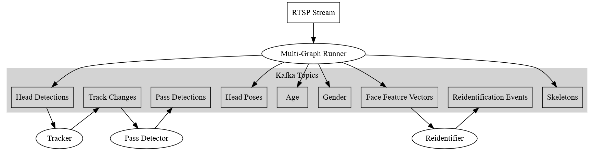

Data Model
As shown below, microservices are connected through Kafka® topics. This section provides information about the schema and format of these topics.
 Dataflow Architecture of UVAP
The data model of UVAP is normalized. Every topic contains one piece of information; if information from multiple topics is needed, the topics have to be joined.
Topic Naming Convention
Kafka topics cannot be structured to hierarchical folders, so UVAP packages most information into the topic name to help the users. Topic names use the following naming convention:
<domain>.cam.<stream_id>.<data_name>.<schema>.<serialization_format>
Where:
| Variable | Description |
|---|---|
<domain> | User-defined prefix. Can be used to distinguish between topics in different projects, locations, and so on. |
<stream_id> | ID of the stream. Can be used to distinguish between topics for different cameras. |
<data_name> | Name of the input data. Can be used to distinguish between different instances of analysis type. |
<schema> | Record schema name. For further information, see Topic Schemas below. |
<serialization_format> | Format of the topic file. Currently only JSON (.json) is supported for structured data. JPEG (.jpeg) is used to save images. |
Attention!
Uncompressed JSON can be prohibitive. It is recommended to turn on LZ4 compression in the Kafka broker to spare storage and bandwidth.
Although this naming convention is recommended, the topic name is completely user-defined.
Example Topic Name
See the following example topic name and its description below:
demo.cam.117.dets.ObjectDetectionRecord.json
This topic is produced by MGR, dets refers to the MGR data node.
ObjectDetectionRecord refers to the schema of the data described
in the Kafka data proto.
.json describes the serialization format.
Topic Schemas
The data model used by UVAP is normalized. The schema of all the structured
topics are described in the Kafka data proto with comments embedded for
explanation. The schema of the Kafka record values are defined in proto
messages ending with Record. The comment before the definition describes
the key as well.
Microservices emit progress (or heartbeat) records as well to make joining topics easier in real-time. Different topics have different progress record properties, which are described in the Kafka data proto.
Example Topic Schema
See the following example topic schema (ObjectDetectionRecord):
// Detection record.
// One instance of this record is generated for each detected head/face on each frame.
//
// time: timestamp of the input video frame
// key: time + "_" + sequential index within frame
message ObjectDetectionRecord
{
ObjectType type = 1; // Object type
Rect bounding_box = 2; // Rectangular box containing the object (eg.: head/face)
float detection_confidence = 3; // Detection confidence between 0 and 1
bool end_of_frame = 4; // When true, all other fields of the record are invalid.
}
Example Output Records
See the following example dump of a JSON detection topic with the
ObjectDetectionRecord schema:
$ kafkacat -C -b localhost -t demo.dets.ObjectDetectionRecord.json -o-1 -f "%k,%s\n"
Expected output:
1561981650053,{"type":"PERSON_HEAD","detection_confidence":0,"end_of_frame":true}
1561981650303_0,{"type":"PERSON_HEAD","bounding_box":{"x":1009,"y":388,"width":44,"height":52},"detection_confidence":0.978241444,"end_of_frame":false}
1561981650303_1,{"type":"PERSON_HEAD","bounding_box":{"x":1235,"y":434,"width":68,"height":80},"detection_confidence":0.924045682,"end_of_frame":false}
1561981650303,{"type":"PERSON_HEAD","detection_confidence":0,"end_of_frame":true}
1561981650553_0,{"type":"PERSON_HEAD","bounding_box":{"x":1009,"y":388,"width":44,"height":52},"detection_confidence":0.978059471,"end_of_frame":false}
1561981650553_1,{"type":"PERSON_HEAD","bounding_box":{"x":1236,"y":435,"width":67,"height":79},"detection_confidence":0.928204656,"end_of_frame":false}
1561981650553,{"type":"PERSON_HEAD","detection_confidence":0,"end_of_frame":true}
1561981650803,{"type":"PERSON_HEAD","detection_confidence":0,"end_of_frame":true}
1561981651003,{"type":"PERSON_HEAD","detection_confidence":0,"end_of_frame":true}
There are timestamps (for example: 1561981650803) with no detections, only
a record with end_of_frame set to true.
If the end_of_frame has the value true when processing detections, the
microservice can emit all the information for the particular frame.
Cross References
Records in topics produced by a microservice often contain references to records of other topics. A chain of references ensures the possibility to link useful data with each other, for example, demographic data with tracks.
Example Cross Reference
The detection_key property of TrackChangeRecord produced by the Tracker
microservice refers to an ObjectDetectionRecord key and an AgeRecord key in
two other topics produced by MGR. For more information on these keys, see
Kafka data proto.
Note:
The key inTrackChangeRecordis usually not equal to itsdetection_key, for its key refers to the detection of the first record of the track. For further information, see Tracker Output Schemas.
This simple example is only a sneak peek of UVAP capabilities. For example,
with Pass Detection microservice, even more information can be received
about a TrackChangeRecord (which can be associated with AgeRecords).
Consuming and Producing messages
While using UVAP it is possible to read the result topics of a particular microservice with your own code or to write custom messages, for example when creating your own staff directory using Person Streams. A Python implementation of a simple low- and high level Consumer and Producer is also provided as a part of the package. For more details, see the Demo Applications.
Join
Because the data model is normalized, it is common to read and join multiple topics. Joining Kafka topics is solved in the Kafka Streams Java API. A Python implementation of Join is also provided as a part of the package. For more details, see the Demo Applications.